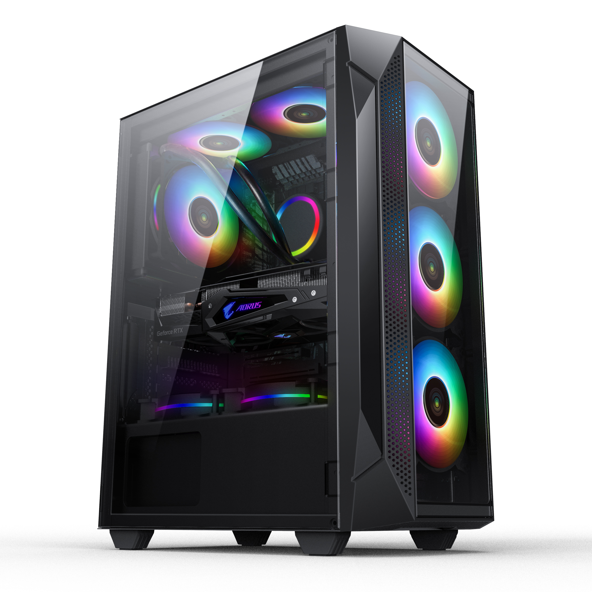
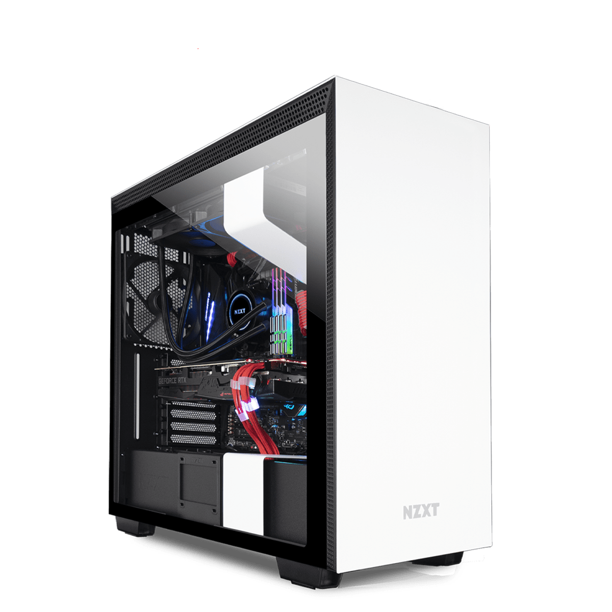
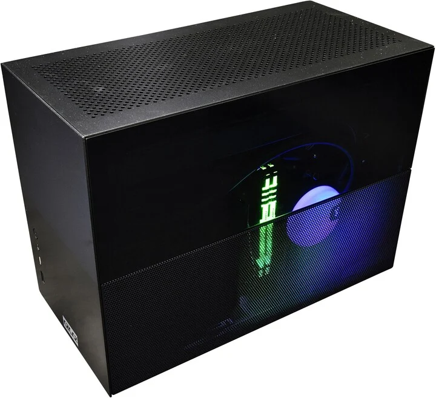
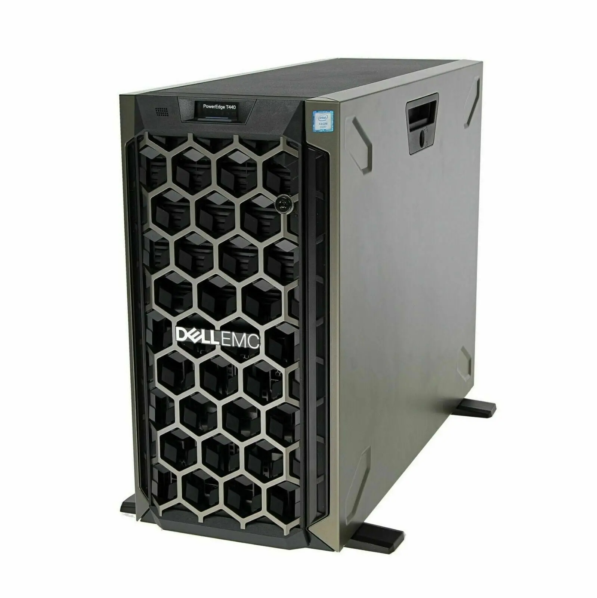
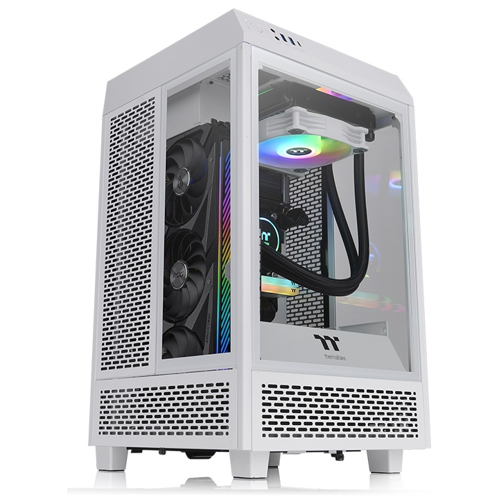

Počítačová skříň, nebo také case, je jedním ze základních komponentů PC sestavy a definuje první dojem, který váš počítač dělá. Dobrá PC skříň umožňuje pohodlný přístup ke všem součástem, účinně odvádí teplo a nevibruje. Co je důležité a na co vše si dát pozor? Poradíme vám, jak správně vybrat PC skříň.
Big Tower je největší z case typu Tower a nabízí mnoho místa pro další rozšiřování počítače. Díky své schopnosti efektivně odvádět teplo se hodí pro stavbu těch nejvýkonnějších PC sestav. Tyto skříně jsou nejvyšší, proto si při jejich výběru změřte prostor, kam je umístíte.
Se skříní Midi Tower lze postavit i velmi výkonnou PC sestavu vhodnou do domácí i firemní kanceláře, kde se zpravidla lehce vejde pod pracovní stůl. V budoucnu ji lze poměrně dobře rozšiřovat a vylepšovat o výkonnější komponenty.
Skříně Mini Tower doporučujeme pro stavbu jednoduchých PC sestav a kancelářských počítačů, u kterých se nepočítá s budoucím rozšiřováním. Vzhledem k menším možnostem chlazení se nejlépe hodí pro osazení nepříliš tepelně výkonnými komponenty.
Skříně pro server slouží jako vhodný základ pro výkonné sestavy. Podporují základní desky formátu ATX a mají mnoho pozic pro disky, tudíž pokryjí datovou náročnost i s výhledem do budoucna. Kvůli své hmotnosti bývají někdy na kolečkách.
Hledáte-li case pro malý počítač, doporučujeme Mini ITX. Určeny jsou pro stavbu PC sestav, na které nejsou kladeny nároky na vysoký výkon. Jsou malé, proto se vejdou i do stísněných prostor v malé kanceláři. Jak je dle názvu patrné, do této skříně lze vložit pouze základní desku formátu Mini ITX.
